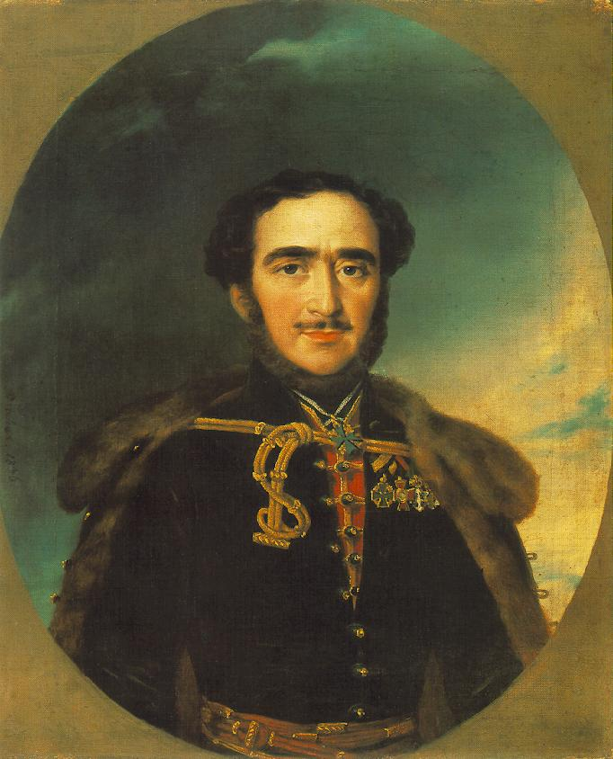

Lánchíd
A Széchenyi lánchíd a Buda és Pest közötti állandó összeköttetést biztosító legismertebb híd a Dunán. A magyar főváros egyik jelképe. Az első állandó híd a teljes magyarországi Duna-szakaszon. Építését gróf Széchenyi István kezdeményezte, és finanszírozását báró Sina György szervezte. A munkálatok 1839-ben kezdődtek, a kész hidat 1849. november 20-án avatta fel Haynau. A híd megépítésének teljes költsége 6,575 millió aranyforintot tett ki, ebből maga a híd 4,4 millióba, az összköltség kétharmadába került. A II. világháború végén a visszavonuló német hadsereg felrobbantotta maga mögött.
Története
A 19. században egy Buda és Pest közötti állandó Duna-híd létesítésének gondolata már nemcsak a városfejlesztéssel foglalkozó szakemberekben, hanem a polgárokban is felmerült, azonban a híd építésének ellenzői is akadtak. Egyrészt a magyar mérnökök a nagyfolyami hidak építésében nem rendelkeztek kellő tapasztalattal, másrészt a híd megépítését ellenzők tábora a vízáramlás következtében az alapok kimosódásától, árvíztől tartottak. Köztudott volt, hogy az ókori és középkori soknyílású, boltozott hidak közül, amelyek kevésbé széles és kisebb vízhozamú folyókat hidaltak át, többet is elsodort a víz. A hídépítés előkészítése, a felmerülő műszaki és gazdasági problémák megoldása gróf Széchenyi István munkájának eredménye. első teendője volt a Hídegylet megalapítása. Széchenyi elsőként a tehetősebb pest-budai polgárok segítségére számíthatott.
Lánchíd adatai
- Hídhossz:380M
- Hídszélesség:14.5M
- Kocsipálya szélessége:6.4M
- Gyalogjárdák szélessége:2.2M